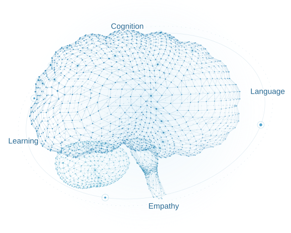

COG-AI-LAB
We study language, human cognition, and empathetic AI.
Led by Assoc. Prof. Minh-Tien Nguyen

Human reasoning in intelligent systems.
Understanding language and knowledge.
More thoughtful human–AI conversations.
Connecting text, vision, and speech.
Enable JavaScript to view the lab’s content, or visit our advisor’s homepage.